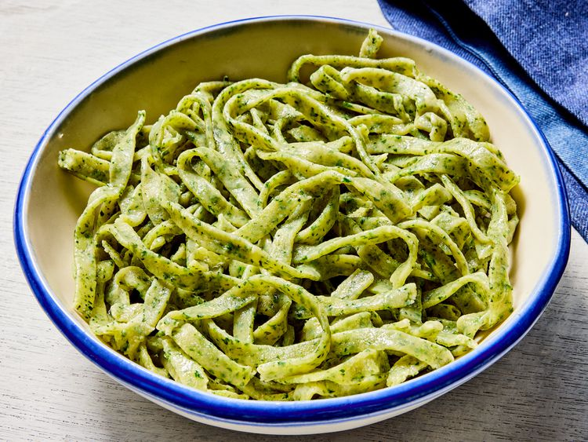

Odin Recipes
-
 Lasagna
Lasagna
Making perfect homemade lasagna doesn’t have to be tedious. This top-rated easy lasagna recipe comes together quickly with a relatively short ingredient list.
-

Spinach pastaA go-to spinach pasta recipe. Spinach adds a beautiful color and flavor to pasta when introduced to the mix. Getting the blend right can be tricky, but this recipe will show you how.
-
 Spaghetti carbonara
Spaghetti carbonara
This is a favorite supper dish that's quick and easy to make. I double it for our family of 4 growing boys. We serve it all up and then add on the goodies that are left in the bottom of the bowl - there's always bacon and eggs left down there.